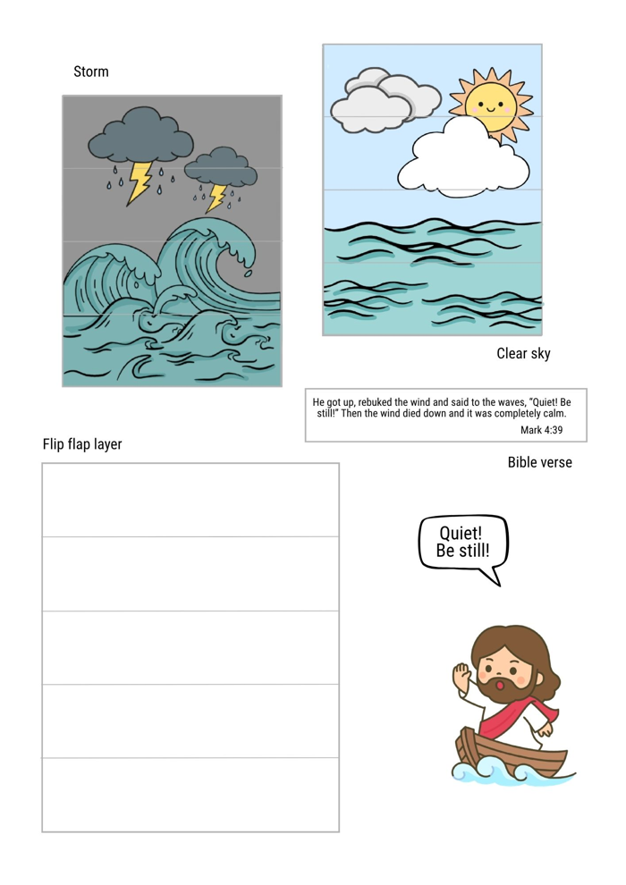

Get the children thinking about storms and what we do when we’re scared.
The storm throws “water” into the boat, and the disciples try to bail it out — until the leader calls, “Be still!”
Setting Up
- Mark out the shape of a boat’s hull on the floor with masking tape.
- Scrunch up lots of blue paper into balls — this is the “water”. Scatter them around the outside of the boat.
- Choose 2 or 3 children (depending on numbers) to be the disciples inside the boat. Everyone else is the storm and stands outside it.
How to Play
- The leader calls, “Here comes the storm!” The storm children toss the paper balls into the boat as fast as they can.
- The disciples try to toss every ball back out of the boat.
- When the leader calls, “Be still!”, the storm stops straight away — no more throwing.
- You might let the disciples empty the rest of the “water” out of the boat while all is calm.
- Choose new disciples and play again, so everyone gets a turn in the boat.
Bible passage: Mark 4:35–41
Watch the video together, then take the online quiz to see what the children remember.
▶︎ Open the Video on YouTubeThe Story in Brief
One evening, after teaching a big crowd, Jesus said to His disciples, “Let’s cross to the other side of the lake.” So they got into a boat and set off. Jesus was so tired that He fell asleep in the back of the boat. Then a huge storm came. The wind howled, and the waves crashed over the sides until the boat was filling with water. The disciples were terrified! They woke Jesus up and shouted, “Teacher, don’t You care if we drown?” Jesus got up and spoke to the wind and the waves: “Quiet! Be still!” Straight away the wind stopped, and everything was completely calm. Jesus asked His friends, “Why are you so afraid? Do you still not have faith?” The disciples were amazed and asked each other, “Who is this? Even the wind and the waves obey Him!”
Jesus Connection: Who is this? Jesus is God’s own Son — the One who made the wind and the waves in the first place. That’s why they obey Him! When we have scary “storms” in our lives, Jesus is with us and He is in charge. But Jesus came to save us from something even bigger than a storm on a lake. Our sin puts us in danger, and we can’t save ourselves. Jesus went to the cross and took the punishment for our sin, so that everyone who trusts Him can have peace with God. We can call out to Jesus, just like the disciples did, and know He will never let us go.
🙏 Prayer
Dear God, thank You that Jesus is so powerful that even the wind and the waves obey Him. When we feel scared, help us to remember that Jesus is with us and He is in charge. Thank You that He came to save us from our sin. Help us to trust Him more and more. Amen.
Children make a framed picture with flip-down strips. Flip them one way and there’s a wild storm. Flip them the other way and the sky is clear and the sea is calm — just like when Jesus said, “Quiet! Be still!”
Before the Session
- Print one set per child: page 1 (the two frames) and page 2 (storm, clear sky, flip strips, Bible verse and Jesus in the boat). Card works best for the frames.
- This craft has a few fiddly taping steps. For younger children: cut out all the pieces and build the flip-strip frame ahead of time (steps 1–8), so they only need to glue on the pictures, Jesus and the verse.
- Colour-coding the five strips (a dot of marker on each) makes it easier to keep them in order.
- Print a few copies of the step-by-step guide for the tables. The QR code links to a video tutorial.
Materials
- Printed craft template (one set per child)
- Sticky tape
- Glue stick
- Scissors (or pre-cut pieces for younger children)
Steps
- Cut out the two frames and the five flip strips.
- Tape the strips one by one to the top frame, so each one can flip down like a window.
- Flip them back up and tape across the top, without taping the strips to each other.
- Flip the strips down, with the tape’s sticky side facing up.
- Line up the second frame and press it down to stick. The strips should now flip up and down.
- Cut out the storm picture and the sunny picture.
- Glue the storm picture onto the strips like a puzzle, then flip them over and glue on the sunny picture.
- Finish by gluing Jesus and the “Quiet! Be still!” speech bubble at the side, and the Bible verse at the top of the frame.
Printable Craft
Two files: the craft template and the step-by-step guide.

Play the song and lead the children through the dance. This week, sing the chorus with Verses 1 and 2 (Water into Wine and Calms the Storm). Today’s story is where the chorus comes from!